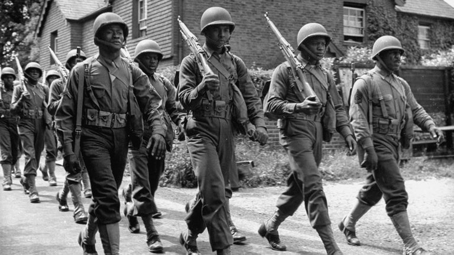

World War II, the largest and deadliest conflict in human history, involved more than 50 nations and was fought on land, sea and air in nearly every part of the world. Also known as the Second World War, it was caused in part by the economic crisis of the Great Depression and by political tensions left unresolved following the end of World War I.
The war began when Nazi Germany invaded Poland in 1939 and raged across the globe until 1945, when Japan surrendered to the United States after atomic bombs were dropped on Hiroshima and Nagasaki. By the end of World War II, an estimated 60 to 80 million people had died, including up to 55 million civilians, and numerous cities in Europe and Asia were reduced to rubble.
Among the people killed were 6 million Jews murdered in Nazi concentration camps as part of Hitler’s diabolical “Final Solution,” now known as the Holocaust. The legacy of the war included the creation of the United Nations as a peacekeeping force and geopolitical rivalries that resulted in the Cold War.
By early 1941, Hungary, Romania and Bulgaria had joined the Axis, and German troops overran Yugoslavia and Greece that April. Hitler’s conquest of the Balkans was a precursor for his real objective: an invasion of the Soviet Union, whose vast territory would give the German master race the “Lebensraum” it needed. The other half of Hitler’s strategy was the extermination of the Jews from throughout German-occupied Europe. Plans for the “Final Solution” were introduced around the time of the Soviet offensive, and over the next three years more than 4 million Jews would perish in the death camps established in occupied Poland.
The largest land, sea, and air invasion ever attempted was years in the making. World War II in Europe began with the invasion of Poland by Nazi Germany in September 1939. Britain and France declared war in response but could do little to help the Poles. In the spring of 1940, German leader Adolf Hitler staged successful invasions of Denmark, Norway, Belgium, Holland, and other nations. German armies then moved into France, rapidly breaking through border defenses and pinning much of the British and French armies against the English Channel. While Britain was able to evacuate many of those forces from the area around Dunkirk, it left Nazi Germany dominant on the continent of Europe
In 1941, Nazi Germany invaded the Soviet Union, formerly a partner. Also, by the end of that year, the United States entered the war after Japan (an ally of Germany) attacked the American base at Pearl Harbor, Hawaii. The entry of the U.S. into the Alliance meant the scope of the planned cross-Channel invasion would grow. Soon American forces began arriving in England to train for the invasion
On May 8, 1945, Germany surrendered. After the atomic bomb was dropped on Hiroshima and Nagasaki, Japan surrendered on September 2, 1945, and the Second World War came to an end. The war cost the lives of more than 330,000 American soldiers. Many more were permanently injured or maimed.